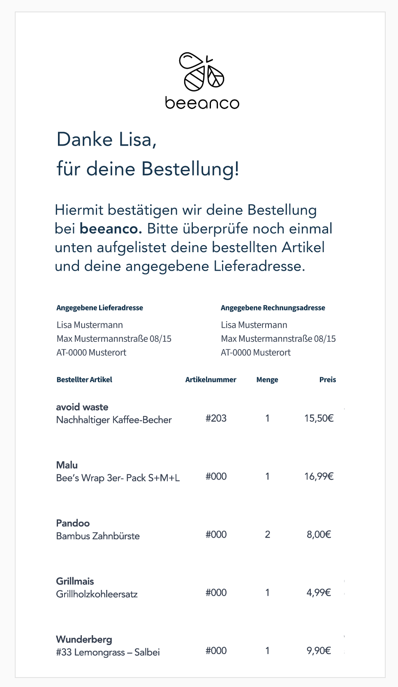

Your objective is to develop a node.js microservice that renders invoices to PDFs. It should expose a REST API that handles incoming JSON requests and renders the invoice similar to this:

npm run start and
listen on port 3000
Send the sample request data at
./test/fixtures/sample-request.json
to your service in a post request and check the result.
Running npm run test does exactly this, with curl:
curl -X POST -H "Content-Type: application/json" -d @./test/fixtures/sample-request.json http://localhost:3000 --output test/results/sample-request.pdf
Note that the test script may not work on a non-unix (e.g. Windows) platform
Use this form if you have any questions or ideas for improvements:
Good luck!